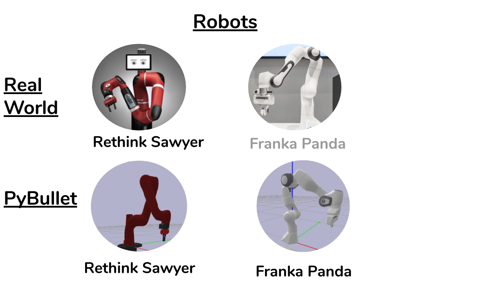

RobotInterfaces¶
 Robot interfaces are used to obtain information about the robot like state and dynamics parameters, and send commands to the robot to execute. RobotInterfaces are specific to the perls2.world they inhabit. For instance, BulletRobotInterfaces can exist only in a BulletWorld.
Robot Control.¶
perls2 uses torque-based controllers for executing robot commands. In a typical experimental set up, a learning policy will produce an action based on observations of the environment. This action is typically interpreted in the form of a robot command like moving the end_effector to some pose. The RobotInterface receives this command and sets an appropriate goal for the controller. The controller, given a model of the robot’s states and dynamics parameters will produce a set of joint torques to command to the robot.
Why Torque control?¶
One of the central goals of perls2 was to improve the consistency between experiments in the real world. All robots at some level execute torque-based control to the motors. This means that the same controllers can be used between sim and real, with minimal overhead based on the simulation / real world.
Creation¶
Robot Interfaces are automatically created based on the config file. This ensures that robots interfaces are created for the appropriate world. You can select and even switch between robots using the config file. Simply change the config key : world:robot: to the desired type ('panda' or 'sawyer')
Interfaces available.¶
Currently, the following robot interfaces are available for specific worlds.
BulletWorld:
BulletSawyerInterface : Bullet implementation of Rethink Sawyer Arm.
BulletPandaInterface: Bullet implementation of Franka Panda Arm
RealWorld:
RealSawyerInterface: interface for communicating with real Rethink Sawyer Arms.
Real Robot Control¶
Making it easier to work with real robots is one of the goals of perls2. perls2 comes with scripts that help with this process. Check out the Real Robot Control page to learn more.